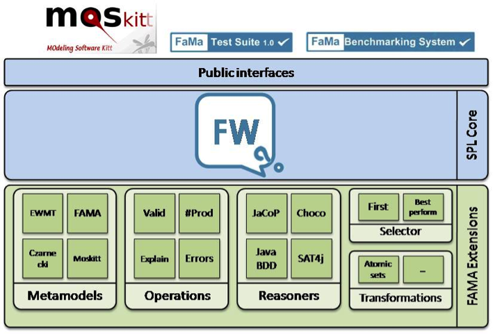

2 Overview of the FAMA Framework
FAMA (FeAture Model Analyzer) is an open source Java framework under LGPLv3 license for the automated analysis of feature models. It provides useful information extracted from these models, such as the number of products that can be derived from them, and possible errors they may have.
FAMA is developed as OSGi plug-ins, which allow an easier development and assembly. The framework has three layers, as shown in Figure 1, namely public interfaces, SPL Core and FAMA Extensions. The SPL Core provides the necessary services to allow interoperation between the extension modules but keeping them uncoupled. The extensions layer is composed of various modules, such as metamodels, operations and reasoners to name a few.
2.1 Feature models
A feature model is a hierarchical tree structure representing all the products that can be derived from a Software Product Line (SPL) in terms of “features”. Features are distinctive characteristics of a software system. Every feature model comprises features and the relationships among them. The first feature in the feature model, called the root feature, is used to identify the SPL and should always be present in every product.
The remaining features emerge from this root feature in a hierarchical tree structure. Relationships between features may be of two types. On the one hand, parental relationships, i.e. between a parent feature and its child features. Parental relationships can be categorized as mandatory, optional or set. On the other hand, non-parental relationships, also known as cross-tree constraints. The most common cross-tree constraints are requires and excludes. All these features are defined as follows:
- Mandatory:
- A mandatory relationship states that if a parent feature is present in a product its child feature must be present too.
- Optional:
- An optional relationship states that if a parent feature is present in a product its child feature may or may not be present.
- Set:
-
A set of child features has a set relation with their parent when
a number of them can be included in the products in which its
parent feature appears. The amount of child features that may be
included is given by the relation cardinality. The relation
cardinality is expressed as a range of values
[x,y], wherex ≤ yandy ≤ number of child features. Two special cases of set relations can be identified: Alternative and Or relations. - Alternative:
-
A set of child features have an Alternative relation with their
parent when only one child can be present when its parent feature
is present in the product. In this case the relation cardinality
can be expressed as
[0,1]. - Or:
-
A set of child features have an Or relation with their parent when
one or more of them can be present when its parent feature is
present in the product. In this case the relation cardinality can
be expressed as
[0,n], wherenis the number of child features. - Requires:
-
A requires relationship is a cross tree constraint that states
that if feature
Arequires featureBthen if featureAis present in a product, featureBmust be present too. - Excludes:
-
An excludes relationship is a cross tree constraint that states
that if feature
Aexcludes featureBthen featuresAandBcan not be present at the same time in a product.
Feature models can be extended, if necessary, to include additional information about its features. These extended feature models are commonly referenced as extended, advanced or attributed feature models. Extended feature models enable more complex constraints among features and attributes, for example “If attribute A of feature F is lower than a value X, then feature T can not be part of the product”.
2.2 Overview of the FAMA Extensions Layer
Since the FAMA Framework is component-oriented, it allows for its easy extension to functionality and feature model support through new components that are known as FAMA Extensions. This FAMA Extensions will live in the FAMA Extensions Layer. Currently the FAMA Framework includes several FAMA Extensions that provide support for creating feature models conforming to various feature metamodels, operations over feature models, reasoners, and model transformations. Metamodel extensions provide different approaches to represent a feature model; supported metamodels are Czarnecki’s cardinality-based feature models, Moskitt and an own FAMA metamodel. Operation extensions specify concerns that arise when handling feature models and that need to be solved, such as what products can be derived from a given feature model or are there any errors present in the feature model. Operation extensions are used closely with reasoner extensions.
A reasoner is meant to execute the operations over feature models to obtain required information or properties from it. There are different techniques to perform these operations, and the constraint satisfaction problem technique is one of them. Reasoner extensions are usually implemented to use a specific technique, for example through out this guide we will be developing a new reasoner to support the analysis of feature models represented through constraint satisfaction problems; following sections will explain more about what constraint satisfactions problems are and how they are used to build a representation of feature models. Anyone can create a FAMA Extension that extends the framework in one of these aspects or create one for an entirely new purpose. For more detail on the FAMA Extensions available please refer to [Jesús García Galán. FaMa Framework (MSc. Thesis). Escuela Técnica Superior de Ingeniería Informática, Departamento de Lenguajes y Sistemas Informáticos, Universidad de Sevilla. 2009.].
2.3 Overview of a Constraint Satisfaction Problem representation of feature models
A Constraint Satisfaction Problem (CSP) is defined as a three-tuple composed of a set of problem variables, a set of domain values for each of the variables, and a set of constraints over those variables that restrict the values they can take. A CSP is solved by the assignment of a value to every variable in its domain through search and propagation in such way that all constraints are simultaneously satisfied. A feature model can be mapped to a CSP. The features from the feature model will be represented as variables with a domain equivalent to its specific cardinality. The representations for the relationships are as follows (more detail about these representations can be found here):
- Mandatory:
-
A mandatory relation between a parent feature and its child can be
represented with the logical expression parent
present ⇔ child present. - Optional:
-
An optional relation between a parent feature and its child can be
represented with the logical expression
parent not present ⇒ child not present. - Set:
-
A set constraint between a parent feature and its children with
cardinality [x,y] can be represented with the logical expression
(parent present ⇒ x ≤ ∑children present ≤ y) ∧ (parent not present ⇒ children not present), equivalent to an if-then-else. Both the Alternative and Or cases are handled by this expression. - Requires:
-
A Requires relation between an origin feature and its destination
can be represented with the logical expression
origin present ⇒ destination present. - Excludes:
-
An Excludes relation between an origin feature and its destination
can be represented with the logical expression
¬(origin present ∧ destination present)that can also be expressed asorigin present ⇒ destination not present.
A product that can be derived from the feature model represented as a CSP is, thus, one of the possible solutions to the CSP.
2.4 Overview of Choco and Choco 3
In order to solve CSPs we can use one of the many tools that have been developed for this purpose. Since the FAMA Framework is built on top of Java and all extensions are encouraged to be built using Java we have chosen to work with Choco for the development of our new reasoner. Choco is an open source Java library developed for constraint satisfaction problems (CSP) and constraint programming (CP). It is meant to be used for teaching and research purposes, although several industrial companies use it.
Choco
3 is the newest and current release to date of Choco, however, it
breaks all backwards compatibility with previous versions of the
tool as it was completely rewritten from the ground up. This new
version of Choco integrates various types of variables (e.g.
integer, Boolean, set, graph, real), various constraints (natively
supports explained contraints) (e.g. classical arithmetic
constraints, alldifferent, count, nvalues), various search
strategies (e.g. first fail, smallest, impact-based,
activity-based), and an explanation-based engine. However, the
Choco 3 library no longer provides native support for biconditional
expressions, so, for example, to represent the mandatory
relationship with Choco 3 an equivalent expression needs to be
used, sucha as
(parent present ⇒ child present) ∧ (child present ⇒
parent present)
.